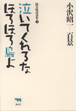
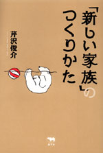
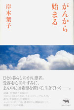
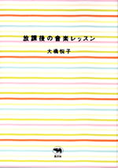
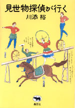
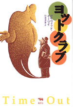
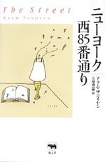

|

|
エッセイ |
|
|
シリーズ名／小沢昭一百景１ |
||
| 小沢昭一 | ||
| 四六判 384頁 | ||
| 定価2520円（本体2400円） | ||
| ISBN4-7949- 1791-0 C0395 | ||
| 俳優・小沢昭一さんが、この30年余に綴ったエッセイ、話したこと、対談でつぶやいた言葉を拾い集めた「随筆随談選集」シリーズ全6巻が始まります。テーマ別に揃えました。その1巻は、旅、です。小沢さんの軽快で渋くかつ韜晦な旅をめぐる話でいっぱいです。お薦めの宿から全国美人さがしの旅、さらには、食べ歩きと……。いまは亡き田中小実昌さんとの対談「風に吹かれて」も収録！ | ||
|

|
社会・教育 |
|
|
「新しい家族」のつくり方 |
||
| 芹沢俊介 | ||
| 四六判 240頁 | ||
| 定価1785円（本体1700円） | ||
| ISBN4-7949- 6581-8 C0036 | ||
| いま、わたしたちの家族はどこに行こうとしているのか。家族という形に、この先、果たして未来や希望はあるのだろうか――。著者は考える。例えば、「できちゃった婚」が年間出産の25％になった（2000年）。これは、愛とセックスの分離であり、そこから子どもへの愛は生まれるのだろうか、と。斬新な家族論を論じてきた、気鋭な評論家の最新の評論集。 | ||
|

|
エッセイ・がん | ||
| がんから始まる | |||
| 岸本葉子 | |||
| 四六判 232頁 | |||
| 定価1680円（本体1600円） | |||
| ISBN4-7949- 6586-9 C0047 | |||
| 40歳、独身。人気エッセイストの岸本葉子さんは虫垂がんと診断された。しかも、S状結腸に浸潤。手術後、約2年が経つが、再発の不安は消えない。サポートグループに入会、漢方、食事療法、行動療法……がんを受容しながらも、希望はけっしてすてない。多くの人にがん患者の本音を知ってほしくて、病名を明かした著者の、渾身のがん闘病記にして、静謐なるこころの軌跡。 | |||
|
|
映画 | ||
| 映画俳優 | |||
| 佐藤忠男 | |||
| 四六判 440頁 | |||
| 定価3150円（本体3000円） | |||
| ISBN4-7949- 6590-7 C0074 | |||
| かつて「映画俳優」がいた時代があった。アラカン、雷蔵、錦之介、原節子からクーパー、ウェイン、ディーンにモンロー……映画の黄金時代、綺羅星の如くに銀幕を飾っていた。洋邦の大スターから名脇役まで、50名の相貌を貴重な写真とともに紹介。さらには阪東妻三郎の生涯を綴ったシナリオも収録した、佐藤忠男渾身の一冊。映画俳優の“輝き”のヒミツがここにある！ | |||
|

|
音楽・YA |
||
| 放課後の音楽レッスン | |||
| 大橋悦子 | |||
| A5判 144頁 | |||
| 定価1575円（本体1500円） | |||
| ISBN4-7949- 6591-5 C0073 | |||
| ロックやポップス、ジャズなど、おなじみの作品やヒット曲を題材にして、基礎から四方山話まで、学校ではきけない「音楽のツボ」をおさえていく。音階やメロディ、リズム、コード進行、転調といった基本、世界各地の音楽のこと、なぜヘビメタと演歌は見事に合体するのか、などなど、興味深い話が盛りだくさん。音楽好きな人々はもちろん、初心者にも最適な一冊。 | |||
|

|
文化誌・芸能 | ||
| 見世物探偵が行く | |||
| 川添裕 | |||
| 四六判 256＋カラー口絵16頁 | |||
| 定価2520円（本体2400円） | |||
| ISBN4-7949-6592-3 C0021 | |||
| 異国、異次元を横断する「見世物」の文化誌。中国雑技の曲芸に軽業、歌舞伎の大仕掛け、カザフスタンのベリーダンス、「滝の白糸」の水芸、ベトナムの水上人形、古舘伊知郎の口上話芸……。古今東西、過去から現在、書物を渉猟し、記憶や記録をたどり、見世物探偵が訪ね歩く、妙芸至芸の数々。見世物を通し重層的に往還する、文化史再編成の試み。 | |||
|

|
ミステリ |
||
| 晶文社ミステリ ヨットクラブ |
|||
| デイヴィッド・イーリイ 白須清美訳 | |||
| 四六判 328頁 | |||
| 定価2730円（本体2600円） | |||
| ISBN4-7949-2738-X C0397 | |||
| 人生に倦んだ富豪たちのひそかな愉しみを描いてMWA賞に輝いた名作「ヨット・クラブ」、何年ものあいだ一言も口をきかず、互いに無視しあってきた夫婦が繰り広げる奇妙なゲームの顛末「夜の客」など、奇抜なシチュエーション、たがのはずれた異常な世界をブラックユーモアをまじえて描き出し、強烈なショックと恐怖を与える異才イーリイの傑作群。 | |||
|

|
外国文学・ヤングアダルト |
||
| 必読系！ ヤングアダルト ニューヨーク西85番通り |
|||
| アラム・サロイヤン 三谷貞一郎訳 | |||
| 四六判 240頁 | |||
| 定価1995円（本体1900円） | |||
| ISBN4-7949-1833-X C0397 | |||
| 女の子。詩をつくる。映画。ビートルズ。マリファナ。路上に集まった実名のアーティストたち。西85番通りのぼくのちいさなアパートは、落書きだらけ――。60年代のニューヨークに暮らす22歳、もうひとつの『ザ・キャッチャー・イン・ザ・ライ』として読みつがれる永遠の青春小説。街を愛した青春と、輝いていたニューヨークの物語。 | |||